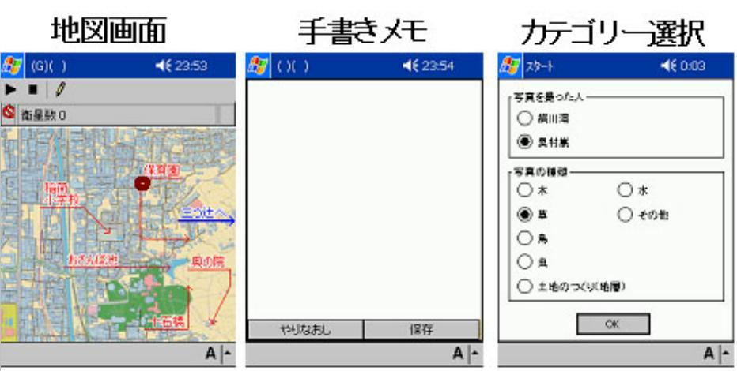
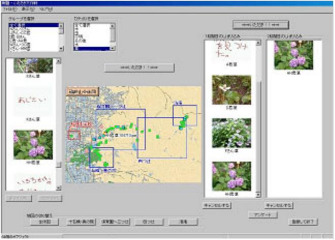
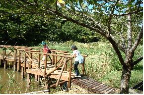
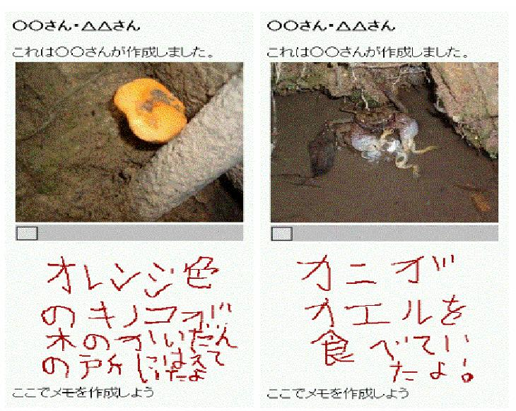

1.京都市立稲荷小学校における実践
京都市立稲荷小学校の協力を得，都市近郊の環境学習支援として開発したシステムを「総合的な学習の時間」に適用する実践活動を行った．稲荷小学校は伏見稲荷大社を含む稲荷山に近接しており，2003年度の学習テーマは「稲荷のまち&稲荷山自然調査隊」と設定されていた．児童は発信・発表会に向けた素材収集のために稲荷山を散策し，各自の課題を決定した後，収集した素材について調べ学習をおこない，意見交換会などを経て発表会をおこなう．支援システムは，野外での観察記録や写真撮影などの取材支援，取材した素材を閲覧・共有するための情報交換支援からなる．
取材支援システムはPDA・GPS・デジタルカメラを用い，児童向けに環境学習支援システムのインタフェースを図１のように改良したものである．通常表示される地図上に現在位置を示す基本画面，取材内容を入力する手書きメモ画面，取材内容をカテゴリ登録する画面の3種類ある．野外での散策中に興味のあるものを発見すると，デジタルカメラで対象物を撮影するとともに，手書きメモ起動ボタンをタップし，手書きメモ画面のホワイトボードにメモ等を描画する．保存ボタンをタップするとカテゴリ登録画面になり，ラジオボタンで取材内容のカテゴリを登録する．写真及び観察記録は位置・時間情報が附加され蓄積される．情報交換システムは，図２に示すよう取材した画像や手書きメモなどのファイルを地図やカテゴリから検索し，サムネール（図２左側）を閲覧し，興味を持ったメモや写真などを自分専用のコンテンツ素材として選択的に保存（図２右側）するものである．
実践後の評価の結果，操作性と機能および楽しさに対する主観的評価は良好で，ストレスなく情報収集・共有をおこなう最低限の機能が満たされているといえる．情報機器を用いた取材と情報交換という手段は，児童の学習課題決定における支援や，情報交換することで児童同士の視点の共有を促す点で，有用性が示された．また教師との論議から，教材の作成や児童の行動軌跡や操作ログの解析をおこなう教師支援ソフトを，実践活動を通して作成・改良している．
 
図１．取材システムのPDA画面 図２．情報交換の画面
2. 京都市野外教育センターにおける実践
京都市の小学校では毎年5年生が京都市野外教育センター奥志摩みさきの家を訪れ，自然体験活動を実施している．地図と課題の書かれた紙を持って，グループで浦山に設置してある学習ポイントを確認しながら課題を解く「浦山徒歩ラリー」がある．本実践ではこれに環境学習支援システムを適用した．実践では児童を2人1組で（図３）周回ラリーコースを散策してもらう.この時，GPSの位置情報から学習ポイントに接近すればPDAに自動的に課題が表示される．課題を解くと共に，散策途中で観察記録を作成し(図４)中間地点に向かう．中間地点では，児童が作成した観察記録をいったん集積し，担任教師が教材としてふさわしいものを選択し，新たな教材として追加しデータの共有を行う．その後，新たな教材を加えたPDAを持って，残りのコースを散策しる．この時も前半と同様に学習ポイントでは課題が表示され，観察記録の作成もする．それに加え，新たに別の児童が作成した観察記録も教材として提示され，別の児童の視点を共有するといった体験ができる．
実践後，児童に対しアンケートを行った．「観察記録の内容の対象物は見つかりましたか？」との質問には，8割の児童が対象物は「ほとんど見つかった」「まあまあ見つかった」と回答し，「観察記録の内容は浦山の自然を観察するのに役に立ちましたか？」との質問には，9割近くの児童が「とても役立った」「まあまあ役立った」と回答したことより，PDA・GPSを用いた野外での観察記録の作成・共有環境の有用性が示唆された．
 
図３．浦山ラリーでの観察風景 図４．児童の観察記録の一例
文献：
大崎智弘，安川直樹，阿部光敏，守屋和幸，酒井徹朗.「総合的な学習の時間」における学習課題決定支援. ヒューマンインターフェース学会論文誌，Vol.6，No.2，pp.195-201，2004.
安川直樹，大崎智弘，阿部光敏，守屋和幸，酒井徹朗. 自然・環境学習における観察記録の作成・共有支援. ヒューマンインターフェース学会論文誌，Vol.6，No.2，pp.213-220，2004.
連絡先：
京都大学 社会情報学専攻 酒井徹朗 sakai at i.kyoto-u.ac.jp